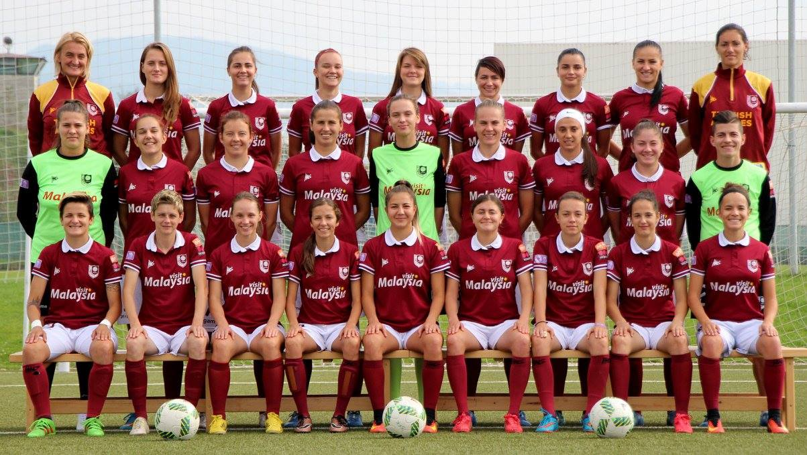

WFC SFK 2000 Sarajevo

SFK 2000 Sarajevo is the most successful women's football club in Bosnia and Herzegovina,
awarded with numerous awards. In its history, SFK 2000 Sarajevo has been pronounced as the best women's club in Canton Sarajevo 5 times in
a row, while being selected in the last round for the best collective of our country within the Contest for Best sports
players of Bosnia and Herzegovina (2014 and 2015). SFK 2000 Sarajevo is also the most successful women's
football club in the region, with 14 continuous titles of Champions of BiH, 13 trophies as Cup of BiH winners, so the
players from SFK 2000 Sarajevo have taken part in the UEFA Champions League for women. The best rank achieved in the
mentioned competition is getting into the round of 32 in 2009 and 2012.
SFK 2000 has been created in June 2000, first as "Alija Miladin"
section, afterwards entering the men's football club "SFK 2000". Meanwhile, the men's club shut down leaving only the women's club
functioning. This club has been created in order to give possibility to girls from Sarajevo and other parts of BiH to train and play football,
which is our primary vision and mission.